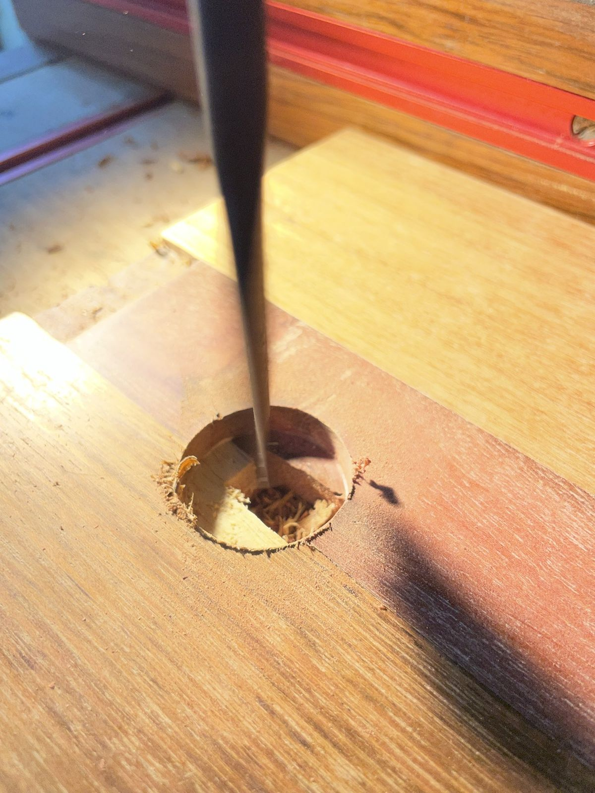
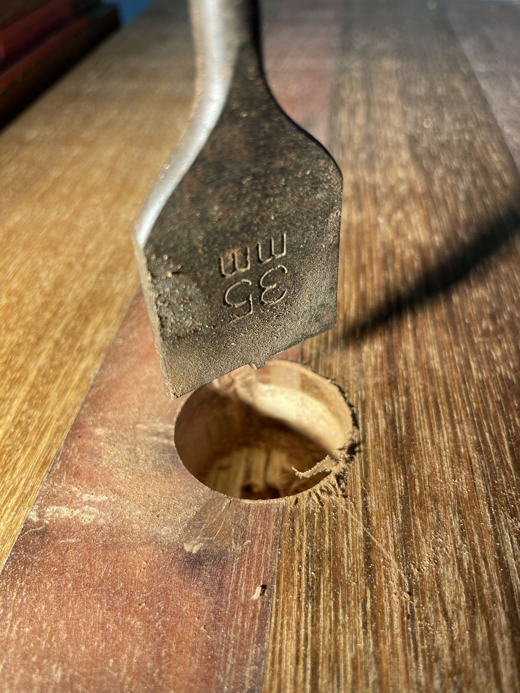

O mistério da madeira albina
Um furo numa tábua de maçaranduba, um pó branco que não devia estar ali e um culpado inesperado. Crônica de oficina num domingo de chuva.
Quando minha casa foi demolida, não tive coragem de deixar as janelas irem embora. Guardei esquadrias, divisórias e batentes de jequitibá, peroba e maçaranduba, madeira velha e honesta que viu décadas de sol entrando pela sala. Hoje tenho estoque para uns três anos de marcenaria, e é com enorme prazer que transformo esses restos em peças novas. Comecei por tábuas de corte para presentear amigos, cada uma com um formato diferente, com a ideia de que um pedaço da minha casa passasse a morar no lar deles. Num domingo de chuva, voltei a uma dessas tábuas, feita meses antes com as três espécies, e o dedo parou num pequeno furo escuro, bem no trecho de maçaranduba. Broca, pensei. Peguei o formão para limpar, certo de que seria coisa de minutos.
Na primeira raspada veio um pó branco. Na segunda, mais. Na terceira, um branco tão limpo que não combinava com nada. A maçaranduba é escura, avermelhada, densa como pedra; aquilo era o oposto dela. Não era farelo, não era podridão. Era firme, fibroso, vivo. Fui cavando com a curiosidade de quem desconfia e o receio de quem já sabe que vai se arrepender. O furo virou uma vala, e a vala revelava cada vez mais daquela coisa pálida escondida no coração da tábua.
Troquei o formão por um maior. Depois por outro maior ainda. A chuva apertava lá fora e eu, debruçado na bancada como um legista, tentava diagnosticar que doença da madeira era aquela. Uma madeira dentro da outra, sem cor, como se a velha janela tivesse guardado um segredo albino no próprio miolo. Imaginei um fungo raro, um defeito de secagem, uma praga ainda sem nome que tivesse sobrevivido à demolição. A tábua, coitada, já não era a mesma.

Foi só quando a forma inteira apareceu, reta demais, comprida demais e perfeita demais para ser obra da natureza, que o mistério se desfez. Aquilo tinha esquadro. Tinha medida. Tinha a minha mão. Era a lingueta de caixeta, uma quarta madeira, clarinha e leve, que eu mesmo tinha colocado meses antes para unir as espécies e dar estabilidade à tábua. O monstro albino era eu, de outro domingo, trabalhando com cuidado para que nada se soltasse.
Guardei o formão e fiquei olhando o buraco por um tempo. A marcenaria tem dessas: a madeira não esquece nada, quem esquece somos nós. Cada junta, cada cola, cada escolha fica lá dentro, quieta, esperando. Caso encerrado, o culpado confessou. E a tábua, que já carregava um pedaço da minha casa, agora leva também uma cicatriz e uma história para a casa de quem a receber.
O conserto
Um enxerto retangular deixaria os cantos à mostra. A saída foi transformar a cavidade num furo redondo, com uma broca chata de 35 mm, para receber um tarugo.
